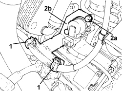
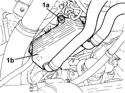
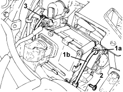

2127C24 PIPE FROM SOLENOID VALVE ASSEMBLY TO MASTER CYLINDER FOR ELECTROHYDRAULIC SELECTION GEARBOX - R.R
- Path
- Procedures > 21 GEARBOX UNIT > 2127 ELECTRO-HYDRAULIC SELECTION GEARBOX EXTERNAL CONTROLS > 2127C HYDRAULIC GEAR SELECTION SYSTEM > 2127C24 PIPE FROM SOLENOID VALVE ASSEMBLY TO MASTER CYLINDER FOR ELECTROHYDRAULIC SELECTION GEARBOX - R.R
- Kind
- repair procedure (removal / refitting; the operation number is the code)
- Applies to
- engines: 2.2 JTS; all production periods
- Interactive page
- https://sloeber94.github.io/elrnDB-aBrrSpdr/en/#/946004304
Applies to: engines: 2.2 JTS; all production periods
 Removing
Removing
 Refitting
Refitting- Position the vehicle on a lift.
- Place the gear lever in N.
- Connect an Examiner and run the depressurization procedure.
Op. 5530B52 BATTERY SUPPORT/DRIP TRAY - R.R
Op. 7055B54 UNDER ENGINE PROTECTION/GUARD - R.R.
1. Open the starter motor supply lead retaining clips.
2. Undo the bolts (2a) and remove the wiring holder bracket (2b).

Applies to: engines: 2.2 JTS; all production periods
1. Unscrew the bolts (1a) securing the engine oil heat exchanger (1b) complete with pipes and move it aside.

Applies to: engines: 2.2 JTS; all production periods
1. Undo the connector (1a) for the rigid oil supply pipe to the master cylinder (1b), valve assembly side.
2. Undo the bolt for the bracket retaining the pipe from the valve assembly to the master cylinder.
3. Undo the connector and remove the rigid oil supply pipe to the maseter cylinder (1b).

Applies to: engines: 2.2 JTS; all production periods
Refitting
Removing- Place the rigid oil supply pipe to the master cylinder in position and tighten the connector.
- Tighten the bolt for the bracket retaining the pipe from the valve assembly to the master cylinder.
- Tighten the connector for the rigid oil supply pipe to the master cylinder, valve assembly side.
- Place the engine oil heat exchanger complete with pipes in its housing and secure it to the mounting bracket using the bolts.
- Place the wiring holder bracket in its housing and secure it using the bolts.
- Position the starter motor supply lead and secure it using the retaining clips.
Op. 5530B52 BATTERY SUPPORT/DRIP TRAY - R.R
Op. 7055B54 UNDER ENGINE PROTECTION/GUARD - R.R.
Op. 0010T48 HYDRAULIC SYSTEM FOR GEARBOX WITH HYDRAULIC SELECTION - BLEED AIR
Op. 0010T11 ENGINE OIL - CHECK LEVEL AND TOP UP, IF NECESSARY
- Remove the vehicle from the lift.
Topics linked from this page (6)
- 0010T11 ENGINE OIL - CHECK LEVEL AND TOP UP, IF NECESSARY
- 0010T47 HYDRAULIC SYSTEM FLUID FOR GEARBOX WITH HYDRAULIC SELECTION CHECK LEVEL AND TOP UP, IF NECESSARY
- 0010T48 HYDRAULIC SYSTEM FOR GEARBOX WITH HYDRAULIC SELECTION - BLEED AIR
- 5530B10 BATTERY - R+R
- 5530B52 BATTERY SUPPORT/DRIP TRAY - R.R
- 7055B54 UNDER ENGINE PROTECTION/GUARD - R.R.